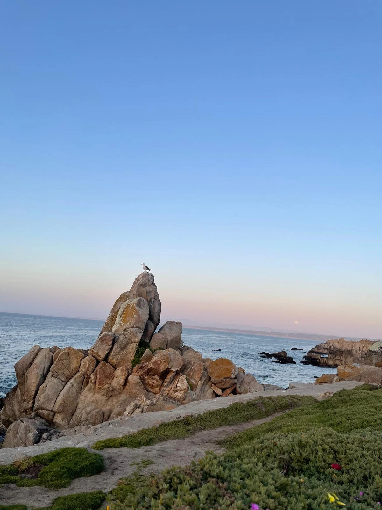
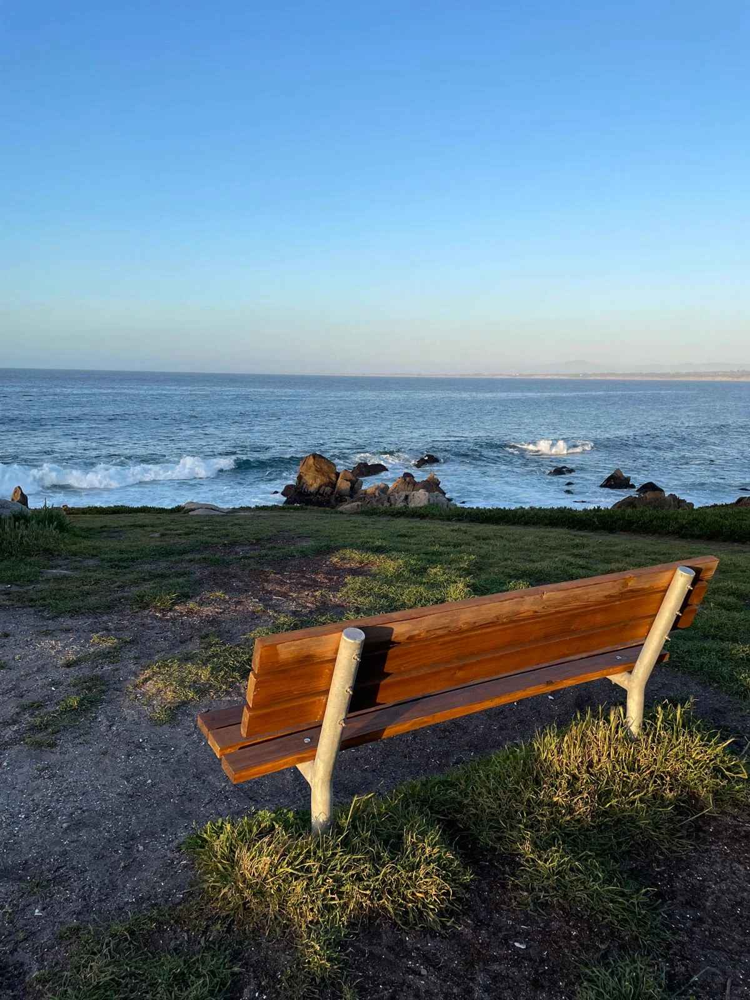
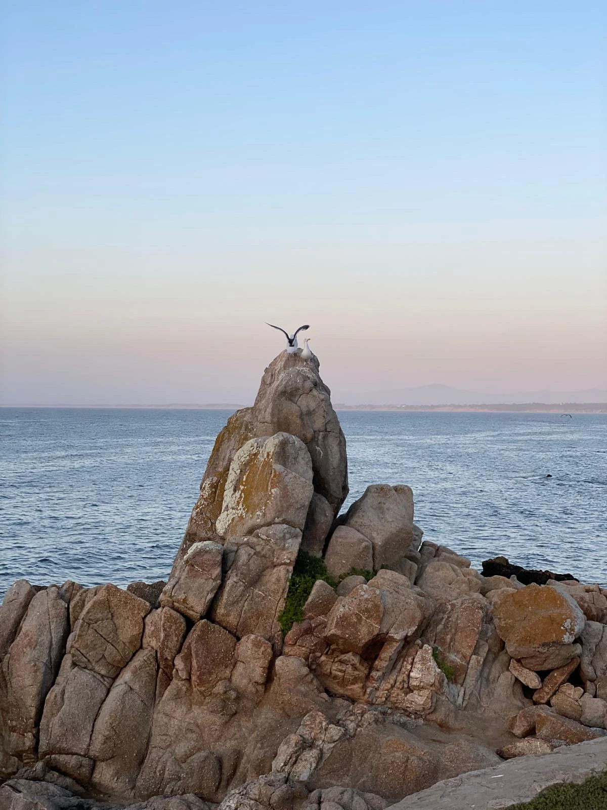

Paleta de cores
Medida no navegador: fundos ponderados pela área ocupada, textos pela quantidade de caracteres. Destaques reúnem cores saturadas e fundos de botão.
Fundos
rgb(41, 71, 109)
rgb(255, 255, 255)
rgb(235, 235, 235)
rgb(232, 220, 200)
rgb(230, 226, 218)
rgb(177, 213, 243)
rgb(25, 46, 71)
Textos
rgb(41, 71, 109)
rgb(255, 255, 255)
rgb(38, 104, 168)
rgb(177, 213, 243)
rgb(29, 52, 71)
rgb(111, 159, 200)
Destaques
rgb(41, 71, 109)
rgb(255, 255, 255)
rgb(232, 220, 200)
rgb(38, 104, 168)
rgb(177, 213, 243)
rgb(29, 52, 71)
Gradientes
linear-gradient(rgb(232, 220, 200) 0%, rgb(255, 255, 255) 29%)linear-gradient(rgb(41, 71, 109) 0%, rgb(64, 106, 160) 100%)linear-gradient(150deg, rgb(38, 104, 168), rgb(29, 52, 71))linear-gradient(150deg, rgb(111, 159, 200), rgb(44, 90, 140))linear-gradient(150deg, rgb(216, 203, 178), rgb(180, 158, 120))Tipografia
Escala usada (desktop 1440px)
| Tamanho | Peso | Família | Amostra |
|---|---|---|---|
| 48px | 400 | Fraunces | Texto de exemplo |
| 41px | 400 | Fraunces | Texto de exemplo |
| 40px | 400 | Fraunces | Texto de exemplo |
| 36px | 400 | Fraunces | Texto de exemplo |
| 34px | 400 | Fraunces | Texto de exemplo |
| 30px | 400 | Fraunces | Texto de exemplo |
| 30px | 500 | Fraunces | Texto de exemplo |
| 20px | 300 | Karla | Texto de exemplo |
| 20px | 400 | Fraunces | Texto de exemplo |
| 19px | 400 | Fraunces | Texto de exemplo |
Mobile (390px): 28px/400, 27px/400, 26px/400, 20px/400, 19px/400, 18px/600, 18px/400, 17px/400 · H1 no mobile: sem h1 semântico
Tags
| Tag | Família | Tamanho | Peso | Altura de linha | Espaçamento | Caixa | Cor |
|---|---|---|---|---|---|---|---|
| <h2> | Fraunces | 36px | 400 | 43.2px | normal | none | #29476D |
| <h3> | Fraunces | 30px | 500 | 37.5px | normal | none | #29476D |
| <p> | Karla | 17px | 400 | 28.05px | normal | none | #29476D |
Botões
Recriados com os estilos computados reais. Efeitos de hover e animação não aparecem aqui; veja a seção de animações.
fundo #00000000 · texto #FFFFFF · raio 202px · padding 18px 42px · 18px/600 none · 8x na páginafundo #00000000 · texto #FFFFFF · raio 202px · padding 18px 42px · 18px/500 none · 2x na páginafundo #00000000 · texto #FFFFFF · raio 999px · padding 11px 20px · 15.2px/600 none · 1x na páginafundo #FFFFFF · texto #29476D · raio 202px · padding 18px 26px · 17px/600 none · 1x na páginaCards e containers
“ Conheci Maria Rita há muitos anos atrás. Eu uma “dona de casa”… Eu tinha 3 filhos quando
raio 12px · sombra none · borda 1px solid rgb(41, 71, 109) · 367x634pxTrabalha muito, mas sente que perdeu a direção da própria prática. Está diante de decisões
raio 12px · sombra none · borda 1px solid rgb(41, 71, 109) · 545x376pxSAÚDE EMOCIONAL Último artigo do blog Trecho do artigo mais recente.
raio 12px · sombra none · borda 1px solid rgb(41, 71, 109) · 353x267pxL 01 Liberdade Reconhecer possibilidades e construir uma trajetória alinhada aos próprios
raio 20px · sombra rgba(0, 0, 0, 0.32) 0px 26px 60px 0px · borda 1px solid rgba(255, 255, 255, 0.35) · 472x536pxI 02 Intenção Agir com presença e propósito, transformando decisões automáticas em escolha
raio 20px · sombra rgba(0, 0, 0, 0.32) 0px 26px 60px 0px · borda 1px solid rgba(255, 255, 255, 0.35) · 450x513pxBordas, raios e sombras
Sombras
rgba(0, 0, 0, 0.32) 0px 26px 60px 0pxrgba(41, 72, 109, 0.21) 8px 7px 33px 0pxrgba(0, 0, 0, 0) 0px 0px 0px 0pxEspaçamentos
- Largura do conteúdo mais comum: 1140px
- Padding vertical das seções (topo/base): 0px/0px (11x), 50px/0px (1x)
- Gaps mais usados (flex/grid): 20px, 5px, 10px, 16px, 12px, 18px
- Altura total da página: 19450px em 12 seções
Estrutura e ritmo de cores das seções
Cada faixa é uma seção de topo, com altura proporcional e a cor ou imagem de fundo real.
Animações, ícones e bibliotecas
- Keyframes próprios: fadeIn, piscar
- Animações de entrada do Elementor: fadeIn
- Classes de scroll reveal da casa: scroll-bottom, scroll-left, scroll-right, scroll-top
- Ícones: 37 SVG, 0 ícones de fonte
- Bibliotecas e tags detectadas: ga4, google-ads, happy-addons, jquery, lenis, lottie, meta-pixel, swiper
Snippets da biblioteca presentes nesta página
- Animação de entrada no scroll (scroll-left/right/top/bottom)
- Animação de entrada no scroll com blur
- Card de vidro com borda degradê
- Menu transparente que vira pílula ao rolar (Maria Rita)
- Rodapé 3 colunas (Maria Rita)
- Seção de método com cartas voando no scroll (Maria Rita)
- Link de WhatsApp com mensagem pronta
- Pixel da Meta (Facebook)
- Tag do Google Ads (gtag)
- CSS base de toda página (o que sempre uso)
- Elemento solto (posição absoluta)
Imagens do site




